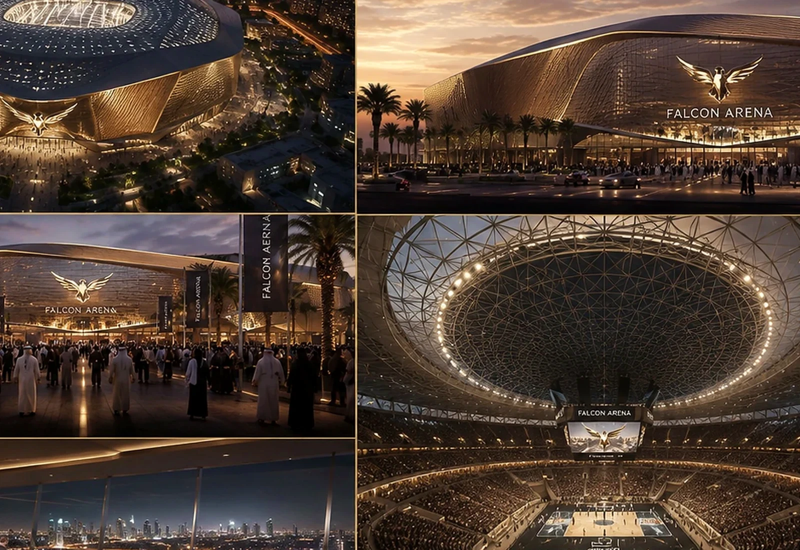
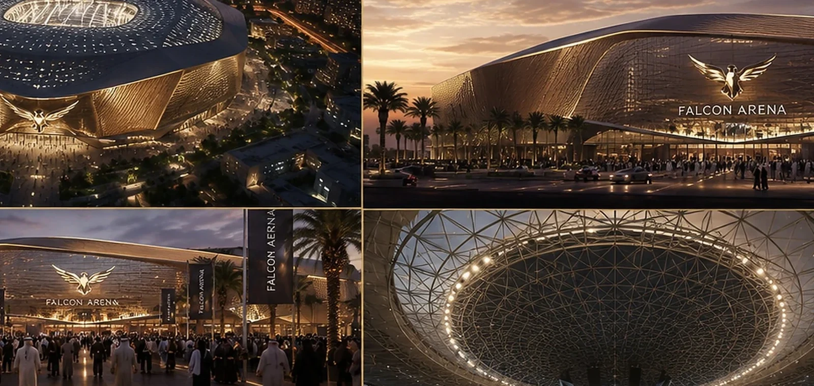
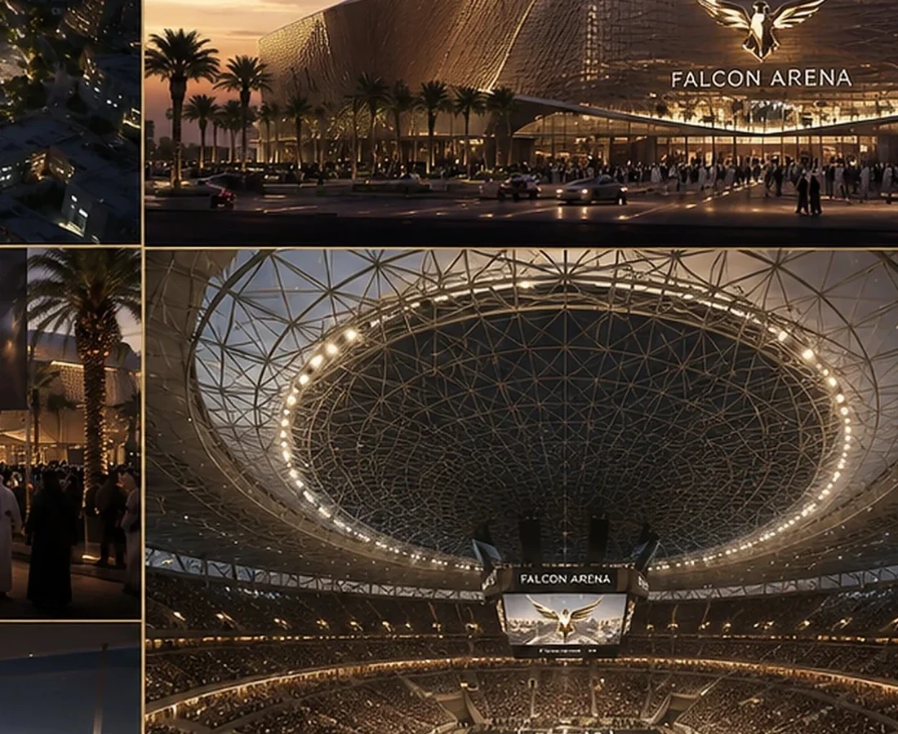
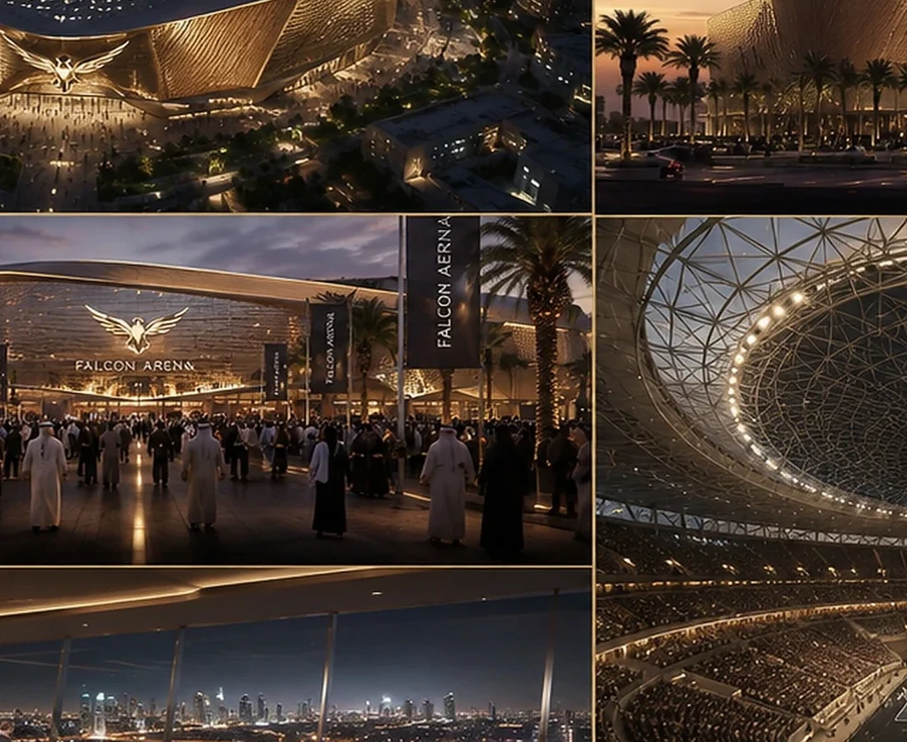
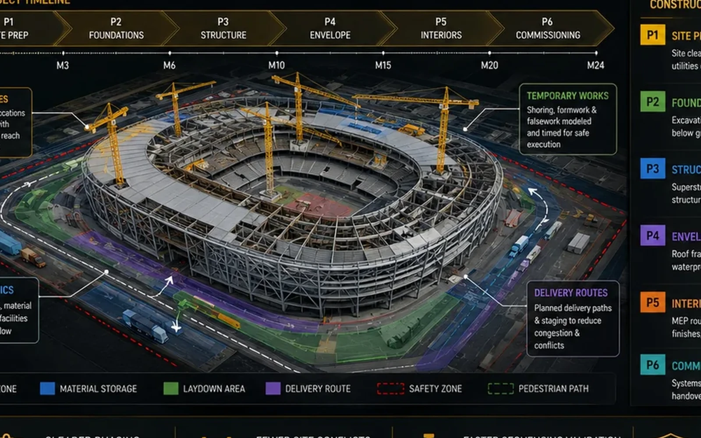

An arena concept conceived as a civic landmark with a strong circular identity, event-scale arrival and a memorable night presence.
LocationRiyadh, Saudi ArabiaYear2022TypologyCivic & Sports / Arena

Design Direction
A project identity shaped by place, typology and experience.
The envelope and roof geometry are used to communicate movement, gathering and collective identity while maintaining a clear event-day circulation logic.
Project narrative is based on the supplied BADR portfolio record and visible design material.



Design → BIM
The architectural idea continues into coordinated digital delivery.
The supplied BIM portfolio includes this project family.

A New Development Opportunity
Your site deserves a product strategy before it becomes a drawing package.